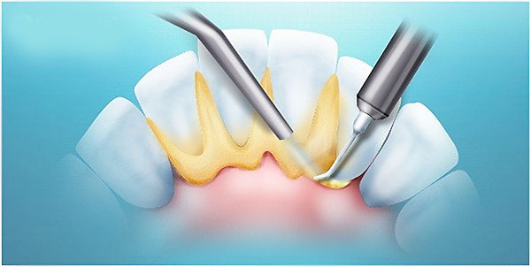
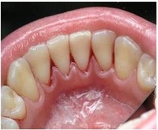

Зубной камень
По локализации и происхождению различают наддесневой и поддесневой зубные камни.
Наддесневой зубной камень располагается на поверхности зубов над десневым краем. Он обычно белого или беловато-жёлтого цвета, твёрдой или глинообразной консистенции. Чем светлее зубной камень, тем он менее плотный и твёрдый, тем быстрее он образуется и откладывается в большем количестве. Темный зубной камень более плотный и твёрдый, образуется медленнее и в меньшем количестве. Наддесневой зубной камень относят к слюнному типу, так как доказано, что минералы и органические компоненты для образования этого камня поступают из слюны.
Встречается у 37-70% детей 9-15 лет, у 44-88% молодых людей 16-22 лет и почти у всех взрослых старше 40 лет.
Поддесневой зубной камень располагается в десневых или пародонтальных карманах. Он обычно плотный и твёрдый, тёмно-коричневого или зеленовато-чёрного цвета.
Поддесневой камень относят к сывороточному типу, так как десневая жидкость, напоминающая сыворотку крови, служит источником минерализации камня этого вида.
Распространённость поддесневого камня несколько ниже, чем наддесневой, но он также обнаруживается почти у всех лиц старше 40 лет.
.jpg "Зубы с зубным камнем") |
 |
Зубной камень раздражает и сдавливает десневой край, что приводит к его травме, воспалению. Зубные отложения следует рассматривать как местный инфекционный очаг, способный вызывать ряд патологических процессов в полости рта и общую интоксикацию организма, поэтому удаление зубных отложений для профилактической и лечебной цели очень важно. Удаление зубного камня можно осуществлять с помощью ультразвукового аппарата, это более эффективно и менее травматично для тканей пародонта.
Рекомендуемое видео:
Как бороться с кариесом